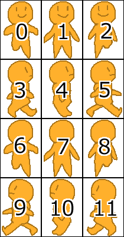
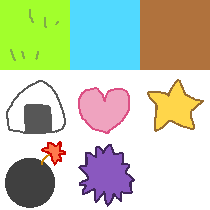

・おにぎりエンジンのモロモロを読み込む関数です。
・onienオブジェクトを作成します。
| w | 【数値】キャンバスの大きさ（横） 省略可（デフォルト：500） |
|---|---|
| h | 【数値】キャンバスの大きさ（縦） 省略可（デフォルト：500） |
・レイヤークラスです。new OeLayer(name,x,y,w,h)で作成します。
| name | 【文字列】レイヤーの名前 |
|---|---|
| x | 【数値】レイヤーの表示位置（横） 省略可（デフォルト：0） |
| y | 【数値】レイヤーの表示位置（縦） 省略可（デフォルト：0） |
| w | 【数値】レイヤーの大きさ（横） 省略可（デフォルト：キャンバスサイズ） |
| h | 【数値】レイヤーの大きさ（縦） 省略可（デフォルト：キャンバスサイズ） |
※w,hはclickイベントなどの判定用のみに使用
以下、使用可能なパラメータ・関数
| addLayer() | 【関数】自分をレイヤーをとしてゲームに追加します。 |
|---|---|
| click | 【function】レイヤーをクリックした時に実行するfunctionを設定できます。function(e,clickX,clickY)でイベントオブジェクトとイベント座標を取得できます。 |
| delAllObject() | 【関数】中身のオブジェクトを全て削除します。 |
| delLayer() | 【関数】自分を削除します。 |
| enterframe | 【function】毎フレーム時に実行するfunctionを設定できます。 |
| h | 【数値】レイヤーの大きさ（縦） |
| mousedown | 【function】レイヤー上でマウスダウンした時に実行するfunctionを設定できます。function(e,clickX,clickY)でイベントオブジェクトとイベント座標を取得できます。 |
| mouseleave | ver.1.1.0a～【function】レイヤー上からマウスリーブした時に実行するfunctionを設定できます。function(e,clickX,clickY)でイベントオブジェクトとイベント座標を取得できます。 |
| mousemove | 【function】レイヤー上でマウスムーブした時に実行するfunctionを設定できます。function(e,clickX,clickY)でイベントオブジェクトとイベント座標を取得できます。 |
| mouseup | 【function】レイヤー上でマウスアップした時に実行するfunctionを設定できます。function(e,clickX,clickY)でイベントオブジェクトとイベント座標を取得できます。 |
| name | 【文字列】レイヤーの名前 |
| nonEvent | 【真偽値】clickなどを使わないならtrueにすると発火確認処理が省略されるので動作が早く…なるかもしれない。 （デフォルト：false） |
| sortStart() | 【関数】sortTypeのソート方法で、レイヤー内オブジェクトの描画順のソートを実行します。 |
| sortType | 【文字列】レイヤー内オブジェクトの描画順のソート方法 "big"：新しく追加した方が上になる "small"：新しく追加した方が下になる "ybig"：yが大きい方が上になる （デフォルト："big"） |
| visible | 【真偽値】表示するか否か （デフォルト：true） |
| w | 【数値】レイヤーの大きさ（横） |
| x | 【数値】レイヤーの表示位置（横） |
| y | 【数値】レイヤーの表示位置（縦） |
以下、通常は使用しないパラメータ・関数
| content | 【連想配列】レイヤーに入ってる各オブジェクト |
|---|---|
| sortList | 【配列】レイヤー内オブジェクトの描画順 |
・スプライト（画像）クラスです。new OeSprite(src,x,y,w,h,coma)で作成します。
| src | 【文字列 / Imageオブジェクト】onien.assetListに登録した画像ファイル名（"img/xxx.png"）を指定します。もしくは、onien.asset["img/xxx.png"]などといった形でImageオブジェクトを直接指定することもできます。pngとjpgが使用可能です。 |
|---|---|
| x | 【数値】画像の表示位置（横） 省略可（デフォルト：0） |
| y | 【数値】画像の表示位置（縦） 省略可（デフォルト：0） |
| w | 【数値】画像の大きさ（横） 省略可（デフォルト：画像サイズ） |
| h | 【数値】画像の大きさ（縦） 省略可（デフォルト：画像サイズ） |
| coma | 【数値】表示するコマの番号。 省略可（デフォルト：0） 画像をwとhで割ってコマ番号を振っています。  |
以下、使用可能なパラメータ・関数
| add(layerName) | 【関数】自分をレイヤーに追加します。 ・layerName：レイヤーの名前（文字列） |
|---|---|
| click | 【function】スプライトをクリックした時に実行するfunctionを設定できます。function(e,clickX,clickY)でイベントオブジェクトとイベント座標を取得できます。 |
| col | 【配列】コリジョン設定 （デフォルト：[0,0,this.w,0,this.w,this.h,0,this.h]） 例えばにという感じでコリジョン設定するなら [37,60,7,40,12,13,33,22,55,11,61,40] という感じです。 右の画像の黒い部分がコリジョン判定範囲で、各頂点を配列としてコリジョン設定する感じです。CollisionSet.htmを使うと比較的簡単にコリジョン設定を作成できるかと思います。 |
| colCheck (obj,x,y) |
【関数】接触判定（コリジョン設定を使用して判定）する。このオブジェクトとobjのコリジョンが接触していれば、trueを返す。それ以外はflaseを返す。 ・obj：「スプライト」か「ぷりアニ」のオブジェクト ・x,y：ここに設定した数値に、このオブジェクトが移動したと仮定して接触判定を行う。省略可。（省略したらこのオブジェクトの現在のx,yが入る。） |
| coma | 【数値】表示するコマの番号。 画像をwとhで割ってコマ番号を振っています。 |
| contactCheck (obj,distance) |
【関数】接触判定（オブジェクトの中心点距離で判定）する。このオブジェクトとobjの中心点の距離がdistance以下なら、接触したと判定してtrueを返す。それ以外はfalseを返す。 ・obj：「スプライト」か「ぷりアニ」のオブジェクト ・distance：中心点の距離がこの数値以下なら接触したと判定する。 |
| del() | 【関数】自分を削除する。 |
| enterframe | 【function】毎フレーム時に実行するfunctionを設定できます。 |
| h | 【数値】画像の大きさ（縦） |
| mousedown | 【function】スプライト上でマウスダウンした時に実行するfunctionを設定できます。function(e,clickX,clickY)でイベントオブジェクトとイベント座標を取得できます。 |
| mouseleave | 【function】スプライト上からマウスリーブした時に実行するfunctionを設定できます。function(e,clickX,clickY)でイベントオブジェクトとイベント座標を取得できます。 |
| mousemove | 【function】スプライト上でマウスムーブした時に実行するfunctionを設定できます。function(e,clickX,clickY)でイベントオブジェクトとイベント座標を取得できます。 |
| mouseup | 【function】スプライト上でマウスアップした時に実行するfunctionを設定できます。function(e,clickX,clickY)でイベントオブジェクトとイベント座標を取得できます。 |
| nonEvent | 【真偽値】clickなどを使わないならtrueにすると発火確認処理が省略されるので動作が早く…なるかもしれない。 （デフォルト：false） |
| opacity | 【数値】不透明度 （デフォルト：1） ※0～1で設定（0で完全に透明、1で完全に不透明） |
| rotate | ver.1.0.9～【数値】回転角度 （デフォルト：null） ※45とか、-90とか、度で設定してください。（ラジアン角では機能しません） ※rotateがnull以外の状態では、接触判定は機能しません。 |
| scale | 【数値】拡縮率 （デフォルト：1） ※scaleが1以外の状態では、接触判定は機能しません。 |
| scaleX | ver.1.0.9～【数値】拡縮率X （デフォルト：null） ※scaleYも設定しないと機能しません。 ※scaleXかscaleYがnull以外の状態では、接触判定は機能しません。 |
| scaleY | ver.1.0.9～【数値】拡縮率Y （デフォルト：null） ※scaleXも設定しないと機能しません。 ※scaleXかscaleYがnull以外の状態では、接触判定は機能しません。 |
| src | 【文字列 / Imageオブジェクト】onien.assetListに登録した画像ファイル名（"img/xxx.png"）を指定します。もしくは、onien.asset["img/xxx.png"]などといった形でImageオブジェクトを直接指定することもできます。pngとjpgが使用可能です。 |
| visible | 【真偽値】表示するか否か （デフォルト：true） |
| w | 【数値】画像の大きさ（横） |
| x | 【数値】画像の表示位置（横） |
| y | 【数値】画像の表示位置（縦） |
以下、通常は使用しないパラメータ・関数
| id | 【文字列】オブジェクトの固有番号 ※addした時に付与されます。"S_1"といった「タイプ_固有番号」形式の文字列。 |
|---|---|
| idNum | 【数値】オブジェクトの固有番号 ※ver1.1.0a～廃止済み |
| layer | 【文字列】所属しているレイヤーの名前 |
| type | 【文字列】オブジェクトタイプ（"S"） |
・HTMLタグクラスです。new OeHtmlTag(sid,buttonOn,buttonOff)で作成します。
※注意：buttonOnを設定して作成する場合、該当HTMLタグ要素に各種イベントリスナーがセットされますので、inputタグやtextareaタグは指定すると、スマホの場合はイベント発生時にpreventDefaultをするので、入力等が動作しなくなります。buttonOnを設定して作成しない場合は、各種イベントリスナーがセットされないため、特に問題ないと思います。
| id | 【文字列】使用するHTML要素のid |
|---|---|
| buttonOn | 【文字列】このオブジェクトを押した時の画像ファイル名を設定する。onien.assetListに登録した画像ファイル名（"img/xxx.png"）を指定します。 省略可（デフォルト：null） idで指定したHTML要素がimgタグの場合のみ使用可能です。 |
| buttonOff | 【文字列】このオブジェクトを離した時の画像ファイル名を設定する。onien.assetListに登録した画像ファイル名（"img/xxx.png"）を指定します。 省略可（デフォルト：null） idで指定したHTML要素がimgタグの場合のみ使用可能です。 |
以下、使用可能なパラメータ・関数
| add(layerName) | 【関数】自分をレイヤーに追加します。 ・layerName：レイヤーの名前（文字列） |
|---|---|
| autoPosition | ver.1.0.2～【真偽値】自動で位置調整するか否か （デフォルト：false） trueにするとウィンドウサイズに合わせて自動で位置調整します。xとyの両方のパラメータに数値が入力されている必要があります。 |
| autoScale | ver.1.0.4～【真偽値】自動で拡縮するか否か （デフォルト：false） trueにするとウィンドウサイズに合わせて自動で拡縮します。これをtrueにする場合、wとh（文字を含む場合はfontsizeも）をあらかじめ設定しておくことを推奨します。 |
| buttonOn | 【文字列】このオブジェクトを押した時の画像ファイル名を設定する。onien.assetListに登録した画像ファイル名（"img/xxx.png"）を指定します。 HTML要素がimgタグの場合のみ使用可能です。また、最初にbuttonOnを設定して作成している場合のみ機能します。 |
| buttonOff | 【文字列】このオブジェクトを離した時の画像ファイル名を設定する。onien.assetListに登録した画像ファイル名（"img/xxx.png"）を指定します。 HTML要素がimgタグの場合のみ使用可能です。また、最初にbuttonOnを設定して作成している場合のみ機能します。 |
| del() | 【関数】自分を削除する。 |
| enterframe | 【function】毎フレーム時に実行するfunctionを設定できます。 |
| fontsize | ver.1.0.4～【数値】HTML要素内の文字の大きさ（縦） （デフォルト：null） 文字を含むHTML要素でautoScaleをtrueにする場合は設定することを推奨します。また、このパラメータにはnullか数値以外を設定しないでください。 |
| h | ver.1.0.4～【数値】HTML要素の大きさ（縦） （デフォルト：null） autoScaleをtrueにする場合は設定することを推奨します。また、このパラメータにはnullか数値以外を設定しないでください。 |
| mousedown | 【function】マウスダウンした時に実行するfunctionを設定できます。最初にbuttonOnを設定して作成している場合のみ機能します。 |
| mouseleave | ver.1.0.2～【function】マウスリーブした時に実行するfunctionを設定できます。最初にbuttonOnを設定して作成している場合のみ機能します。 |
| mousemove | ver.1.0.2～【function】マウスムーブした時に実行するfunctionを設定できます。最初にbuttonOnを設定して作成している場合のみ機能します。 |
| mouseup | 【function】マウスアップした時に実行するfunctionを設定できます。最初にbuttonOnを設定して作成している場合のみ機能します。 |
| visible | 【真偽値】表示するか否か （デフォルト：true） |
| w | ver.1.0.4～【数値】HTML要素の大きさ（横） （デフォルト：null） autoScaleをtrueにする場合は設定することを推奨します。また、このパラメータにはnullか数値以外を設定しないでください。 |
| x | ver.1.0.2～【数値】表示位置のpx（x） （デフォルト：null） 数値を設定すると、HTML要素には自動的にstyleのposition:absoluteが設定されます。また、このパラメータにはnullか数値以外を設定しないでください。 |
| y | ver.1.0.2～【数値】表示位置のpx（y） （デフォルト：null） 数値を設定すると、HTML要素には自動的にstyleのposition:absoluteが設定されます。また、このパラメータにはnullか数値以外を設定しないでください。 |
以下、通常は使用しないパラメータ・関数
| autoF | ver.1.0.4～【数値】自動で拡縮した時の要素内の文字の大きさ |
|---|---|
| autoH | ver.1.0.4～【数値】自動で拡縮した時の要素の大きさ(縦) |
| autoW | ver.1.0.4～【数値】自動で拡縮した時の要素の大きさ(横) |
| autoX | ver.1.0.2～【数値】自動で位置調整した時の表示位置(x) |
| autoY | ver.1.0.2～【数値】自動で位置調整した時の表示位置(y) |
| id | 【文字列】オブジェクトの固有番号 ※addした時に付与されます。"H_1"といった「タイプ_固有番号」形式の文字列。 |
| idNum | 【数値】オブジェクトの固有番号 ※ver1.1.0a～廃止済み |
| layer | 【文字列】所属しているレイヤーの名前 |
| obj | 【オブジェクト】HTML要素のオブジェクト |
| positionSet() | ver.1.0.2～【関数】自動で位置調整する |
| scaleSet() | ver.1.0.4～【関数】自動で拡縮する |
| type | 【文字列】オブジェクトタイプ（"H"） |
・ぷりアニクラスです。new OePriani(prianiId,chara,x,y,refrain)で作成します。
| prianiId | 【文字列】表示するアニメーションのid |
|---|---|
| chara | 【文字列】キャラクター名 |
| x | 【数値】画像の表示位置（横） 省略可（デフォルト：0） |
| y | 【数値】画像の表示位置（縦） 省略可（デフォルト：0） |
| refrain | 【真偽値】繰り返し再生するか否か 省略可（デフォルト：true） |
以下、使用可能なパラメータ・関数
| add(layerName) | 【関数】自分をレイヤーに追加します。 ・layerName：レイヤーの名前（文字列） |
|---|---|
| change (prianiId,refrain) |
【関数】アニメーションを変更する。 ・prianiId：変更後のアニメーションID ・refrain：繰り返し再生するか否かの真偽値 |
| chara | 【文字列】キャラクター名 |
| click | 【function】ぷりアニをクリックした時に実行するfunctionを設定できます。function(e,clickX,clickY)でイベントオブジェクトとイベント座標を取得できます。 |
| col | 【配列】コリジョン設定 （デフォルト：[0,0,this.w,0,this.w,this.h,0,this.h]） 例えばにという感じでコリジョン設定するなら [37,60,7,40,12,13,33,22,55,11,61,40] という感じです。 右の画像の黒い部分がコリジョン判定範囲で、各頂点を配列としてコリジョン設定する感じです。CollisionSet.htmを使うと比較的簡単にコリジョン設定を作成できるかと思います。 |
| colCheck (obj,x,y) |
【関数】接触判定（コリジョン設定を使用して判定）する。このオブジェクトとobjのコリジョンが接触していれば、trueを返す。それ以外はflaseを返す。 ・obj：「スプライト」か「ぷりアニ」のオブジェクト ・x,y：ここに設定した数値に、このオブジェクトが移動したと仮定して接触判定を行う。省略可。（省略したらこのオブジェクトの現在のx,yが入る。） |
| contactCheck (obj,distance) |
【関数】接触判定（オブジェクトの中心点距離で判定）する。このオブジェクトとobjの中心点の距離がdistance以下なら、接触したと判定してtrueを返す。それ以外はfalseを返す。 ・obj：「スプライト」か「ぷりアニ」のオブジェクト ・distance：中心点の距離がこの数値以下なら接触したと判定する。 |
| del() | 【関数】自分を削除する。 |
| enterframe | 【function】毎フレーム時に実行するfunctionを設定できます。 |
| mousedown | 【function】ぷりアニ上でマウスダウンした時に実行するfunctionを設定できます。function(e,clickX,clickY)でイベントオブジェクトとイベント座標を取得できます。 |
| mouseleave | 【function】ぷりアニ上からマウスリーブした時に実行するfunctionを設定できます。function(e,clickX,clickY)でイベントオブジェクトとイベント座標を取得できます。 |
| mousemove | 【function】ぷりアニ上でマウスムーブした時に実行するfunctionを設定できます。function(e,clickX,clickY)でイベントオブジェクトとイベント座標を取得できます。 |
| mouseup | 【function】ぷりアニ上でマウスアップした時に実行するfunctionを設定できます。function(e,clickX,clickY)でイベントオブジェクトとイベント座標を取得できます。 |
| nonEvent | 【真偽値】clickなどを使わないならtrueにすると発火確認処理が省略されるので動作が早く…なるかもしれない。 （デフォルト：false） |
| prianiId | 【文字列】表示するアニメーションのid |
| refrain | 【真偽値】繰り返し再生するか否か |
| visible | 【真偽値】表示するか否か （デフォルト：true） |
| x | 【数値】画像の表示位置（横） |
| y | 【数値】画像の表示位置（縦） |
以下、通常は使用しないパラメータ・関数
| h | 【数値】 |
|---|---|
| id | 【文字列】オブジェクトの固有番号 ※addした時に付与されます。"P_1"といった「タイプ_固有番号」形式の文字列。 |
| idNum | 【数値】オブジェクトの固有番号 ※ver1.1.0a～廃止済み |
| layer | 【文字列】所属しているレイヤーの名前 |
| opacity | （未実装）【数値】不透明度 |
| scale | （未実装）【数値】拡縮率 |
| type | 【文字列】オブジェクトタイプ（"P"） |
| w | 【数値】 |
・文字クラスです。new OeText(text,x,y)で作成します。
| text | 【文字列】表示する文字列 |
|---|---|
| x | 【数値】文字の表示位置（横） 省略可（デフォルト：0） |
| y | 【数値】文字の表示位置（縦） 省略可（デフォルト：0） |
以下、使用可能なパラメータ・関数
| add(layerName) | 【関数】自分をレイヤーに追加します。 ・layerName：レイヤーの名前（文字列） |
|---|---|
| back | ver.1.0.2～【文字列】背景色 （デフォルト：null） |
| click | ver.1.0.2～【function】クリックした時に実行するfunctionを設定できます。function(e,clickX,clickY)でイベントオブジェクトとイベント座標を取得できます。 |
| color | 【文字列】文字の色 （デフォルト："black"） |
| del() | 【関数】自分を削除する。 |
| enterframe | 【function】毎フレーム時に実行するfunctionを設定できます。 |
| family | 【文字列】フォントファミリー （デフォルト："sans-serif"） |
| h | ver.1.0.2～【数値】大きさ（縦） （デフォルト：100） |
| mousedown | ver.1.0.2～【function】マウスダウンした時に実行するfunctionを設定できます。function(e,clickX,clickY)でイベントオブジェクトとイベント座標を取得できます。 |
| mouseleave | ver.1.0.2～【function】マウスリーブした時に実行するfunctionを設定できます。function(e,clickX,clickY)でイベントオブジェクトとイベント座標を取得できます。 |
| mousemove | ver.1.0.2～【function】マウスムーブした時に実行するfunctionを設定できます。function(e,clickX,clickY)でイベントオブジェクトとイベント座標を取得できます。 |
| mouseup | ver.1.0.2～【function】マウスアップした時に実行するfunctionを設定できます。function(e,clickX,clickY)でイベントオブジェクトとイベント座標を取得できます。 |
| nonEvent | 【真偽値】clickなどを使わないならtrueにすると発火確認処理が省略されるので動作が早く…なるかもしれない。 （デフォルト：false） |
| opacity | ver.1.0.6～【数字】不透明度 （デフォルト：1） ※0～1で設定（0で完全に透明、1で完全に不透明） |
| paddingLeft | ver.1.0.2～【数値】左の空白 （デフォルト：0） |
| paddingTop | ver.1.0.2～【数値】上の空白 （デフォルト：0） |
| size | 【数値/文字列】文字サイズ （デフォルト："24px"） ver.1.0.5～数値での設定も可能 |
| src | ver.1.0.2～【文字列 / Imageオブジェクト】背景画像 （デフォルト：null） onien.assetListに登録した画像ファイル名（"img/xxx.png"）を指定します。もしくは、onien.asset["img/xxx.png"]などといった形でImageオブジェクトを直接指定することもできます。 |
| text | 【文字列】表示する文字列 |
| visible | 【真偽値】表示するか否か （デフォルト：true） |
| w | ver.1.0.2～【数値】大きさ（横） （デフォルト：100） |
| x | 【数値】文字の表示位置（横） |
| y | 【数値】文字の表示位置（縦） |
以下、通常は使用しないパラメータ・関数
| id | 【文字列】オブジェクトの固有番号 ※addした時に付与されます。"T_1"といった「タイプ_固有番号」形式の文字列。 |
|---|---|
| idNum | 【数値】オブジェクトの固有番号 ※ver1.1.0a～廃止済み |
| layer | 【文字列】所属しているレイヤーの名前 |
| type | 【文字列】オブジェクトタイプ（"T"） |
・一時キャンバスクラスです。new OeTmpCanvas(w,h)で作成します。
| w | 【数値】一時キャンバスのサイズ（横） 省略可（デフォルト：100） |
|---|---|
| h | 【数値】一時キャンバスのサイズ（縦） 省略可（デフォルト：100） |
以下、使用可能なパラメータ・関数
| canvas | 【オブジェクト】一時キャンバスの本体 OeSpriteのsrcにパラメータに設定することができる。 |
|---|---|
| context | 【オブジェクト】一時キャンバスのコンテクスト |
| draw(src, cutx,cuty, cutw,cuth, putx,puty) |
【関数】一時キャンバスに画像を貼り付ける ・src：【文字列 / Imageオブジェクト】onien.assetListに登録した画像ファイル名（"img/xxx.png"）を指定します。または、onien.asset["img/xxx.png"]といった形でImageオブジェクトを直接指定することもできます。 ・cutx：【数値】srcの画像の、切り出す領域のX座標 ・cuty：【数値】srcの画像の、切り出す領域のY座標 ・cutw：【数値】srcの画像の、切り出す領域の幅 ・cuth：【数値】srcの画像の、切り出す領域の高さ ・putx：【数値】一時キャンバスの、貼り付ける場所のX座標 ・puty：【数値】一時キャンバスの、貼り付ける場所のY座標 |
使い方の例
使用する画像：chip.png（1マス70×70）

var tmp = new OeTmpCanvas(70,70);
tmp.draw("chip.png",0,0,70,70,0,0); //草を描く
tmp.draw("chip.png",0,70,70,70,0,0); //おにぎりを描く
var sprite = new OeSprite(tmp,0,0,70,70,0);
sprite.add("layer1");
この結果layer1に描写される画像
・メッセージクラスです。OeMessage(x,y,w,h,waitcolor,waitmark,waitsize)で作成します。
※所属先のレイヤーのmouseupを自動で変更しますので、メッセージ専用のレイヤーを用意することを推奨します。
| x | 【数値】文字の表示位置（横） 省略可（デフォルト：0） |
|---|---|
| y | 【数値】文字の表示位置（縦） 省略可（デフォルト：0） |
| w | 【数値】サイズ（横） 省略可（デフォルト：500） |
| h | 【数値】サイズ（縦） 省略可（デフォルト：200） |
| waitcolor | 【文字列】クリック待ち画像の色 省略可（デフォルト："white"） ※後から変更不可。 |
| waitmark | 【文字列】クリック待ち画像の形 省略可（デフォルト："●"） ※後から変更不可。 |
| waitsize | ver.1.0.7～【文字列】クリック待ち画像の大きさ 省略可（デフォルト："small"） "small","big","verybig"のどれかを指定します。 ※後から変更不可。 |
以下、使用可能なパラメータ・関数
| add(layerName) | 【関数】自分をレイヤーに追加します。 ・layerName：レイヤーの名前（文字列） |
|---|---|
| back | 【文字列】背景色 （デフォルト："black"） |
| color | 【文字列】文字の色 （デフォルト："white"） |
| del() | 【関数】自分を削除する。 |
| end | ver.1.0.7～【function】文章の表示が終わった時に実行するfunctionを設定できます。 |
| enterframe | 【function】毎フレーム時に実行するfunctionを設定できます。 |
| family | 【文字列】フォントファミリー （デフォルト："sans-serif"） |
| firstColor | 【数値】1行目の文字の色 （デフォルト："white"） |
| h | 【数値】サイズ（縦） |
| lineHeight | 【数値】1行の高さ （デフォルト：35） |
| newLine | 【文字列】改行を表す文字 （デフォルト："/"） ※1文字推奨 |
| nonEvent | 【真偽値】clickなどを使わないならtrueにすると発火確認処理が省略されるので動作が早く…なるかもしれない。 （デフォルト：false） |
| opacity | 【数字】不透明度 （デフォルト：1） ※0～1で設定（0で完全に透明、1で完全に不透明） |
| open(texts,mode) | 【関数】メッセージウィンドウに文字を表示する ・texts：表示する文章リスト（配列） ・mode：クリック待ちなどのモード指定 ・"end"にすると、クリック待ちをして、全ての文章を表示し終えたらメッセージウィンドウを閉じる。 ・"select"にすると、クリック待ちをして、全ての文章を表示し終えたらメッセージを表示したまま止まる。 ・1以上の数値にすると、指定した数のフレーム数待ったら、自動でページ送りをし、全ての文章を表示し終わったら、指定した数のフレーム数後に自動でメッセージウィンドウを閉じる。 |
| paddingLeft | 【数値】左の空白 （デフォルト：10） |
| paddingTop | 【数値】上の空白 （デフォルト：10） |
| pagechange | ver.1.0.8～【function】文章のページが切り替わった時に実行するfunctionを設定できます。function(page)でページ番号を取得できます。 |
| radius | 【数値】角の丸さ （デフォルト：20） |
| size | 【数値/文字列】文字サイズ （デフォルト："24px"） |
| speed | 【数値】文字の表示速度 （デフォルト：1） ※0で瞬間表示、1～は大きいほど遅い。 |
| src | 【文字列 / Imageオブジェクト】背景画像 （デフォルト：null） onien.assetListに登録した画像ファイル名（"img/xxx.png"）を指定します。もしくは、onien.asset["img/xxx.png"]などといった形でImageオブジェクトを直接指定することもできます。 |
| visible | 【真偽値】表示するか否か （デフォルト：true） |
| w | 【数値】サイズ（横） |
| waitSpeed | 【数値】クリック待ち画像のアニメーションのスピード （デフォルト：1） ※1以上を指定する。大きい数字ほど遅くなる。 |
| waitX | 【数値】クリック待ち画像の位置(横) （デフォルト：w-30） |
| waitY | 【数値】クリック待ち画像の位置(縦) （デフォルト：h-20） |
| x | 【数値】文字の表示位置（横） |
| y | 【数値】文字の表示位置（縦） |
以下、通常は使用しないパラメータ・関数
| closecount | 【数値】modeが数値の時のカウント |
|---|---|
| endcount | ver.1.0.7～【数値】mode"select"でspeedが0の時に、ちゃんと文章が表示されてからendを実行するためのカウント |
| id | 【文字列】オブジェクトの固有番号 ※addした時に付与されます。"M_1"といった「タイプ_固有番号」形式の文字列。 |
| idNum | 【数値】オブジェクトの固有番号 ※ver1.1.0a～廃止済み |
| layer | 【文字列】所属しているレイヤーの名前 |
| mesEnterFrame() | 【関数】メッセージ表示用のenterframe関数 |
| mode | 【文字列】現在のモード |
| page | 【数値】表示中の文章ページ |
| text | 【文字列】表示中のテキスト |
| textcount | 【数値】表示中の文字数 |
| textlength | 【数値】表示中の文章ページの文字数 |
| textlist | 【配列】表示する文章リスト |
| textstart | 【真偽値】speedが1以上の場合、文字の表示中ならtrue |
| type | 【文字列】オブジェクトタイプ（"M"） |
| wait | 【真偽値】クリック待ち画像の表示オンオフ |
| waitCanvas | 【オブジェクト】クリック待ち画像のキャンバス |
| waitCount | 【数値】クリック待ち画像のフレームNo |
| waitCtx | 【オブジェクト】クリック待ち画像のキャンバスのコンテクスト |
使い方の例
//メッセージ用のレイヤーを用意する
var meslayer = new OeLayer("meslayer");
meslayer.addLayer();
//メッセージクラスを作成する
var mes = new OeMessage(0,300,500,200);
mes.add("meslayer");
mes.end = function(){alert("表示がおわったよ！");}
//メッセージを表示する
mes.open(["花子/元気？","太朗/元気だよ！"],"end");
・OnigiriEngineで作成するオブジェクトです。いろんなものが収納されています。
以下、使用可能なパラメータ・関数
| asset | 【連想配列】画像・音声データの連想配列 {"img/xxx.png":imageオブジェクト,"bgm/xxx.mp3":Audioオブジェクト,…} という感じになっています。各ファイル名のパラメータの中に各image・Audioオブジェクトが入っています。 |
|---|---|
| assetList | 【配列】画像・音声データのファイル名（参照パス）リスト ["img/xxx.png","sound/xxx.mp3",…]という感じに定義していく。 これを元にload関数でデータをロードしていきます。 対応している拡張子（png、jpg、wav、mp3、ogg、m4a） |
| autoScale | 【真偽値】自動的にキャンバスを拡縮するか否か （デフォルト：true） ※trueだと、onien.load()実行時にonien.setScreen関数の追加と実行、windowにresizeのイベントリスナ―を追加して、onien.setScreen関数を実行する。 ver.1.0.4～※trueにしてonien.load()を実行後、falseにすると自動拡縮を停止できる。再びtrueにすればまた自動拡縮をするようになる。 |
| bgm | 【連想配列】BGM関連 ・start(name,buf)：BGMを再生する関数。nameは拡張子を除いたファイル名（例："sound/bgm1"）の文字列。bufは使用する番号（0～2）の数値。bufは省略可（デフォルト：0）。リピート再生のみ。 ※ブラウザで再生可能な拡張子か確かめてから再生していく。wav→mp3→ogg→m4aの順で試していく（ファイルがあれば）。 ※buf[0～2]をすべて使うと3コ同時に再生できます。 ・stop(buf)：BGMを停止する関数。bufは再生を止める番号（0～2）bufは省略可（デフォルト：0）。 ・vol：BGMの音量（0～1）の数値。 ・buf：再生するAudioオブジェクトを代入する配列（0～2）。非再生時はそれぞれnullになってる。通常は触らない。 |
| end() | 【関数】ゲームの完全終了処理（タイマー切ってonienをリセット） ※onien.enterframeTimerをクリア。 ※bgmとseを止めてnullへ。 ※onien=null、dataPriani={}にしてすっきり。 |
| fps | 【数値】1秒あたりの描画回数 ※onien.start関数実行後は変更不可。 |
| frame | 【数値】現在のフレーム番号 ※enterframeの発火ごとに+1されていく。 |
| h | 【数値】ゲームキャンバスの大きさ（縦） ※デフォルトは500。OnigiriEngine(w,h)のh。 |
| load (color,backcolor) |
【関数】画像・音声データを読み込んでキャンバスサイズをセットする。 ・color：「Loading...XX%」の文字色の文字列。 省略可（デフォルト："white"） ・backcolor：ローディング画面の背景色の文字列。 省略可（デフォルト："black"） ロードが完了すると、onienLoadFinishイベントを発火し、onien.readyをtrueにする。 ※onien.canvas.width(height)をonien.w(h)に設定する。 ※onien.autoScaleがtrueなら、onien.setScreen関数をセット・実行。windowにresizeイベントリスナ―を追加して、onien.setScreen関数を実行するようにする。 ※onien.assetListを1つずつ読み込む。 ※読み込みチェック用のタイマー（onien.loadTimer）を設置。 →完了（onien.assetList.length == onien.assetSet）すると、カスタムイベント（onienLoadFinish）をonien.loadfinishEventに設置。onienLoadFinishイベントを発火。onien.readyはtrueに。onien.loadTimerはクリアして削除。 ver.1.0.5～※onien.autoScaleがtrueなら、windowにorientationchangeリスナーも追加して、onien.setScreen関数を実行する。 |
| platform | 【文字列】現在起動しているプラットフォーム。 "i"、"android"、"win"、"mac"、"nazo"のどれかが入る。 |
| se | 【連想配列】SE関連 ・start(name,buf)：SEを再生する関数。nameは拡張子を除いたファイル名（例："sound/ok1"）の文字列。bufは使用する番号（0～2）の数値。bufは省略可（デフォルト：0）。リピート再生はしない。 ※ブラウザで再生可能な拡張子か確かめてから再生していく。wav→mp3→ogg→m4aの順で試していく（ファイルがあれば）。 ※buf[0～2]をすべて使うと3コ同時に再生できます。 ・stop(buf)：SEを停止する関数。bufは再生を止める番号（0～2）bufは省略可（デフォルト：0）。 ・vol：SEの音量（0～1）の数値。 ・buf：再生するAudioオブジェクトを代入する配列（0～2）。非再生時はそれぞれnullになってる。通常は触らない。 |
| setCenter | ver.1.0.3～【真偽値】キャンバスをセンター寄せにするか否か （デフォルト：false） ※onien.autoScaleもtrueである必要がある。onien.autoScaleがfalseだとsetCenterは機能しない。onien.setScreen関数内でセンター寄せ処理を実行する。 |
| start() | 【関数】ゲームをスタートする（タイマーが動き出す） ※onien.enterframeEventを作成、onien.eneterframeTimerが動き出し、enterframeイベントがfpsの間隔で発火するようになる。 ※onien.canvasにenterframeイベントリスナ―を追加して、以下の処理をする。 →onien.readyがtrueなら処理開始。 →onien.ctxをクリアレクト。 →各レイヤー・オブジェクトが表示ONなら、表示処理を行う。（各レイヤー内はレイヤーのsortListの順で描画していく。）各レイヤー・オブジェクトのenterframeに指定されたfunctionを実行。 →onien.frameを++。 ※PCかスマホを判別（onien.platformが"i"か"android"ならスマホ）して、PCならonien.canvasにclick、mousedown、mouseup、mousemove、mouseleaveのイベントリスナ―を追加。それぞれonien.eventClickCheckを起動。スマホならonien.canvasにtouchend、touchstart、touchmoveのイベントリスナーを追加。それぞれe.preventDefault()して、それからイベント座標を割り出してからonien.eventClickCheckを起動。 →mousemoveのイベントリスナ―ではmouseleaveも発火確認する。 →touchendのイベントリスナ―にclick,mouseup、touchstartのイベントリスナ―にmousedown、touchmoveのイベントリスナ―にmousemove,mouseleaveのfunctionを実行するようにする。 |
| w | 【数値】ゲームキャンバスの大きさ（横） ※デフォルトは500。OnigiriEngine(w,h)のw。 |
以下、通常は使用しないパラメータ・関数
| addLayer (layer) |
【関数】レイヤーを追加する。 ・layer：レイヤークラスのオブジェクト（オブジェクト） ※onien.layer[layerName]にlayerを代入。 |
|---|---|
| addObj (ele,layerName) |
【関数】オブジェクトをレイヤーに追加する。 ・ele：オブジェクト（スプライト/HTML/ぷりアニ/文字） ・layerName：追加先のレイヤーの名前（文字列） ※ele.layerにlayerName、ele.idに固有id。ele.idNumに固有番号が代入される。 ※onien.idcountを++。 ※onien.layer[layerName].content[ele.id]にeleを代入。 |
| assetSet | 【数値】読み込み済みの画像・音楽データの数 ※これとonien.assetList.lengthが同じになったらロード完了となる。 |
| canvas | 【オブジェクト】ゲームを表示するキャンバスオブジェクト ※idが「onigiri_canvas」のcanvasタグを読み込む。 ※HTMLファイルにあらかじめidが「onigiri_canvas」のcanvasタグを設置しておくこと。 |
| colCheck (one,obj,x,y) |
【関数】接触判定（コリジョン設定を使用して判定） ※one(this)のコリジョン範囲内にobjのコリジョン点があったら、trueを返す。それ以外ならfalseを返す。 ※objとoneはスプライトクラス・ぷりアニクラスのどちらかを。 ・x,y：ここに設定した数値に、oneのオブジェクトが移動したと仮定して接触判定を行う。省略可。（省略したらoneのオブジェクトの現在のx,yが入る。） ※oneとobjのどちらかのscaleが1以外なら必ずfalseを返す。 |
| contactCheck (one,obj,distance) |
【関数】接触判定（オブジェクト同士の中心距離で判定） ※objとone(this)の中心点の距離がdistance以下ならtrueを返す。それ以外ならfalseを返す。 ※objとoneはスプライトクラス・ぷりアニクラスのどちらかを。 ※distanceは省略可（デフォルト：one.w） ※oneとobjのどちらかのscaleが1以外なら必ずfalseを返す。 |
| ctx | 【オブジェクト】キャンバスのコンテクスト（canvasのコンテクスト） |
| delLayer (layerName) |
【関数】レイヤーを削除する。 ・layerName：レイヤーの名前（文字列） ※onien.layer[layerName]を削除する。 |
| delObj (ele) |
【関数】オブジェクトをレイヤーから削除する。 ・ele：オブジェクト（スプライト/HTML/ぷりアニ/文字） ※onien.layer[layerName].content[ele.id]を消す。 ※onien.layer[layerName].sortListからも消す。 ※prianiクラスの場合、onien.priani.deletePrianiでキャラデータも削除。 |
| enterframeEvent | 【カスタムイベント】enterframe ※onien.enterframeTimerがonien.fpsのスピード間隔でenterframeイベントを発火する。 |
| enterframeTimer | 【タイマー】enterframeを発火するためのタイマー |
| eventClickCheck (e,clickX,clickY, mode, mouseleaveMode) |
【関数】クリックなどのイベント処理を行う。 ・e：イベントオブジェクト ・clickX,clickY：イベント発生座標 ・mode：click、mousedown、mouseup、mousemove、mouseleaveのいずれかの文字列 ※各レイヤー・各オブジェクトがnonEvent==falseかつvisible==trueの場合、イベント位置をチェックして、イベント位置に該当のレイヤー・オブジェクトがあれば（mouseleaveの場合はイベント位置に該当のオブジェクトがなければ）、そのレイヤー・オブジェクトの"mode"で設定したfunctionを実行する。（レイヤーのsortListの逆の順に発火確認→実行） |
| idcount | 【数値】レイヤーにオブジェクトを追加するとき、固有の番号を振るためのカウント。 ※onien.addObj関数を使うたびに+1。 |
| layer | 【連想配列】レイヤー関連 {レイヤー名:レイヤークラスのオブジェクト,……} |
| loadfinishEvent | 【カスタムイベント】onienLoadFinish ※onien.load関数でonien.assetListの読み込みが完了したことをお知らせ。 |
| priani | 【連想配列】ぷりアニ関連 ・charaListPriani：キャラクターリスト連想配列（{キャラ名:true,…}みたいな） ・charaPriani：キャラのデータ入り連想配列（{キャラ名：{data:{アニメーションデータ},fl:ぷりアニID,opacity:[],refrain:true,x,100,y:100},…}みたいな） ・dataPriani：アニメーションデータ入り連想配列（{ぷりアニID:{アニメーションデータ},…}みたいな） ・drawPriani：function(charaName,xxx,yyy)キャラを表示する関数。enterframe発生時に実行。 ・framePriani：各キャラクターのフレーム番号（{キャラ名:4,…}みたいな） ・loadPriani：function(fl,charaName,charaX,charaY,refrain)キャラクターをcharaPriani内に作成する関数。ぷりアニクラス作成時に実行。framePriani[キャラ名]もセットし、-1を代入。 ・setting：ぷりアニを使用するセッティング。dataPriani、charaPriani、framePriani、charaListPrianiを作成する。 ・changePriani：function(fl,charaName,refrain)アニメーションを変更する関数。loadPrianiを実行する。 ・deletePriani：function(charaName)キャラデータを削除する関数。 ※onien.load関数でonien.assetListの読み込みが完了したことをお知らせ。 |
| ready | 【真偽値】ゲームの準備が出来てるか否か ※onien.assetListを読み込み済みならtrueになる。 ※これがtrueだとenterframeの各処理を行う。 |
| setScreen() | 【関数】ウィンドウサイズに合わせてキャンバスサイズを自動調整する。 ※onien.load関数実行時、onien.autoScaleがtrueなら設置される。 ※onien.load関数実行時と、ウィンドウサイズ変更時に実行される。 |
おにぎりエンジン ＞ 関数など一覧